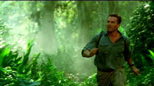
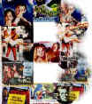

| Collateral Damage (SE)/ C+, A- |
| Warner/2001/109/ANA 1.85 |
Revenge is a vicious mistress. Get into
bed her and you're likely to get a dose of the unexpected. Collateral
Damage is part revenge drama, part terrorist treatise, with a dollop
of political consciousness.
When a terrorist bomb spreads death and horror
beyond its immediate targets, fireman Gordy Brewer is devastated. In short
order he must deal with smothering loss. Gordy is a man of action. When it
appears that only a lackluster attempt to find the perpetrators of
terrorist act will proceed, Gordy goes into action.
The script under the direction of skilled
filmmaker Andrew Davis provides lots of information in the early sequences
with clean expediency without seeming overly expository. You
understand a lot about Gordy Brewer, what he does for a living, his family
relationships, the setting, but it all turns out to truly have little
relevance to the way the character acts. The initial explosion is handled
with restraint and is therefore much more effective. Arnold Schwarzenegger
is quite good in these early scenes displaying a depth of emotion. But
when Collateral Damage gets down to its natural order of business,
that is, being a pretty typical Arnold action flick, Arnold settles
into familiar patterns and there's little more than wooden acting.
 |
|
Post Predator
Arnold visits the jungle again. ©Warner
|
The action is well executed. It's certainly
well filmed. But the story leaves a lot to be desired. Plodding plotting:
the level of improbability is very high. It certainly deals with topical
material in terms of the terrorist act that sets the plot wheels in motion,
but it doesn't really have additional resonance even in light of
unfortunate recent events. Suspending disbelief is a tough banana to
peel. Some of the characters are drawn very archly. Pretty stiff
confrontational scenes play falsely. There is an attempt to humanize the
gorillas, showing how good people can turn bad, but even that is
heavy-handed. I suppose you could say some of the surprises are effective.
The Columbian settings are lush, New York's got
plenty of gloss and even Washington plays fine. Some of the stunts are
definitely cool. In a mindless way, Collateral Damage provides a
measure of entertainment, but don't waste much time thinking about it.
The cast trailing in pursuit of Arnold include
Elias Koteas as CIA Agent Brandt, who struggles to spark any life into the
character. John Turturro turns up in an unfamiliar role to limited effect
and John Leguizamo runs a drug factory. Beauty is supplied by a lithe and
dangerous Francesa Neri, while Cliff Curtis walks through the role of
rebel leader Claudio with a stiff gait.
Collateral Damage gets a consistently sharp
transfer from Warner with only slight lapses into high peak transition
edginess. Deep blacks give the DVD a rich look. Excellent shadow detail
provides good depth in every lighting situation. Outstanding light output
and wide dynamic range of contrast maximize the theatrical appearance of
the DVD. Fully saturated color with excellent range adds additional life
to the picture. Textures are rich. Flesh tones display a subtle range. The
Dolby Digital 5:1 soundtrack is active and accurately places information
throughout the home theater. It captures the feeling for various
ambiances.
The Warners special edition includes feature length
commentary from director Andrew Davis. Also included are two
documentaries, a fifteen-minute behind the scenes and a nine-minute
short focused The Hero in a New Era. A half dozen additional scenes
are also included.. |
|
|
|

Selections from the Feature
Archive include articles on Akira Kurosawa, Blonde Bimbos, Frank Darabont, Steven Culp, John Herzfeld or Vietnam: The Hollywood Pariah, and many
more....
Made For
Second Billing

The B movie, conceived in poverty and dedicated to the proposition of
double features in movie theaters often rose above its limited artistic
origins. Click on the B for more.
Hitchcock on DVD

Information and review links to Alfred Hitchcock on DVD
 
Everything you wanted to know about animation on DVD. Reviews,
news, forum. Webmaster Chris Beveridge.

DVDAnswers offers news, reviews and features. Over the coming
months, the site will continue continues to grow as they strive to make DVDAnswwers
the ultimate DVD website!

World class video expert Joe Kane's home on the Internet. Look
for details on the new DVD Essentials.

Runco home theater products continue to be a force for better imaging.
Leaders in high end projectors with a vertical line of display devices.

DVD links, information about Web specials, news, Site reviews.
 Gary Morris's insightful publication
Bright Lights Film Journal turns the celluloid in films from a unique
perspective. Click on the image above for more pure movie views. Gary Morris's insightful publication
Bright Lights Film Journal turns the celluloid in films from a unique
perspective. Click on the image above for more pure movie views.
|